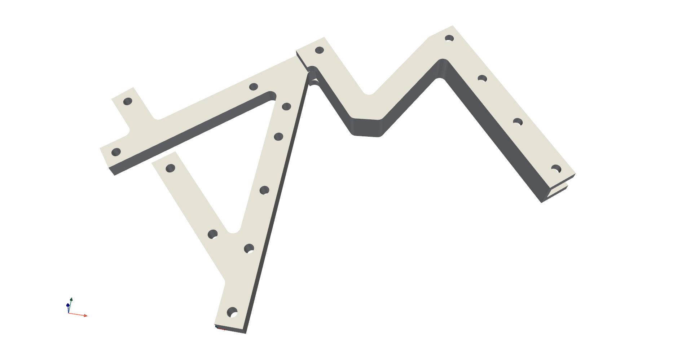
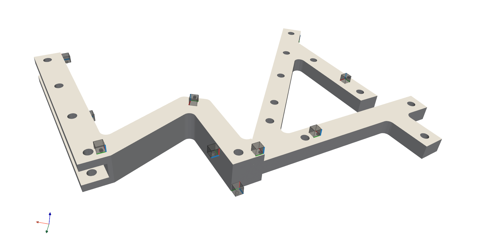
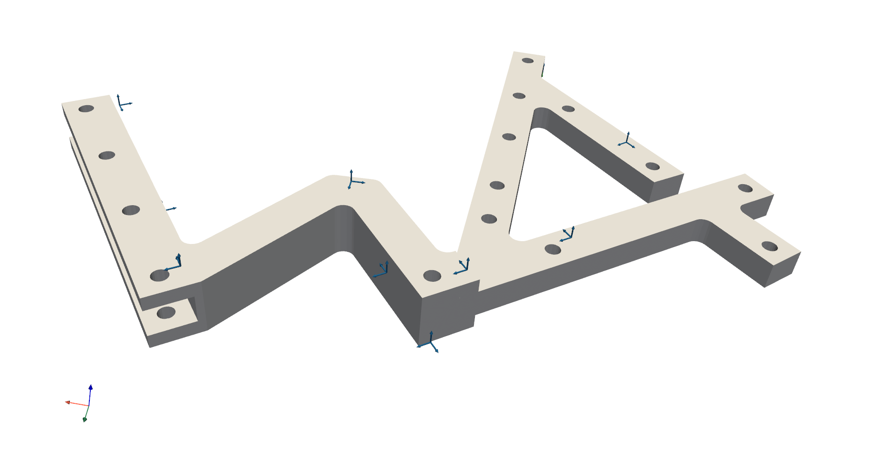
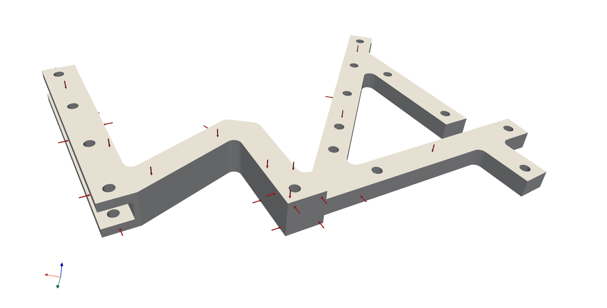
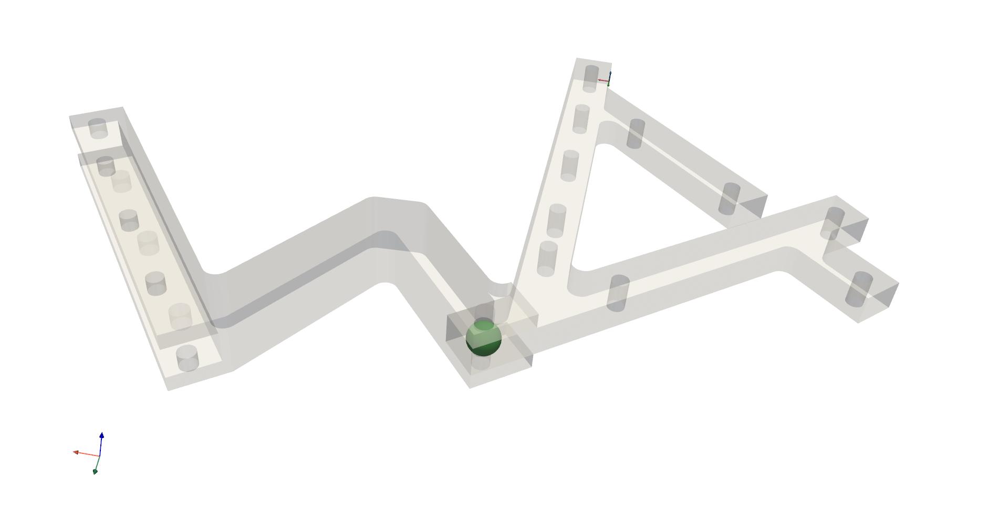
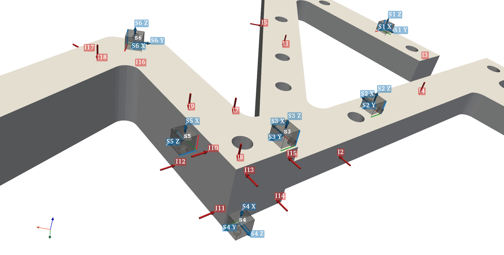

3D Display¶
The pyFBS can be used for 3D visualization. The 3D display enables depiction of structures, sensors, impacts, channels and virtual points in a simple and intuitive, Pythonic manner.
Furthermore, the 3D display supports motion animation, where objects or mode shapes can be animated with ease. For the 3D visualization a python package PyVista is used.
Note
Example showing the basic use of the 3D display: 01_static_display.ipynb.
To open a blank 3D display simply make an instance of the pyFBS.view3D.
view3D = pyFBS.view3D()
A rendering window will open in the background, which will not pause the code execution (for more details refer to the pyvista.BackgroundPlotter). By default a coordinate system is placed in the origin and an orientation marker is placed in the bottom-left corner.
Geometric objects¶
Geometric objects can be added to the 3D display in a simple manner. For simple objects (cylinders, spheres, boxes, …) PyVista methods can be used for the geometry generation. For displaying a more complex geometric objects a STL file can be loaded in the 3D display.
path_to_stl = pyFBS.example_lab_testbench["STL"]["AB"]
view3D.add_stl(path_to_stl,name = "AB")
After the code execution the geometric object will apear in the rendering window.
{kind=link}

An example of a laboratory substructuring testbench depicted in the pyFBS 3D display.¶
Multiple geometric objects can be added to the display with different colors and even opacity (checkout pyvista.BackgroundPlotter.add_mesh() for all options).
When adding multiple geometric objects, care should be taken that different name variable is provided, otherwise the object with the same name will be overwritten (discarded from the 3D display).
I/O Objects¶
In the 3D display accelerometers, channels, impacts and virtual points can be shown. The positional and orientation information for each separate degree of freedom is defined in a pandas.DataFrame.
Accelerometers¶
Accelerometers can be added to 3D display directly from the pd.DataFrame.
path_to_xlsx = pyFBS.example_lab_testbench["meas"]["xlsx"]
df_acc = pd.read_excel(path_to_xlsx, sheetname='Sensors_AB')
view3D.show_acc(df_acc)
After the code execution accelerometers will be shown in the 3D display.
{kind=link}

Accelerometers on the laboratory substructuring testbench.¶
Channels¶
Channels associated with accelerometers can be added to the 3D display directly from the pd.DataFrame.
df_chn = pd.read_excel(path_to_xlsx, sheetname='Channels_AB')
view3D.show_chn(df_chn)
After the code execution channels will be shown in the 3D display.
{kind=link}

Channels from the corresponding accelerometers on the laboratory substructuring testbench.¶
Impacts¶
Impacts can be added to the 3D display directly from the pd.DataFrame.
df_imp = pd.read_excel(path_xlsx, sheetname='Impacts_AB')
view3D.show_imp(df_imp)
After the code execution impacts will be shown in the 3D display.
{kind=link}

Impacts on the laboratory substructuring testbench.¶
Virtual points¶
Virtual points can also be added to the 3D display directly from the pd.DataFrame.
df_vps = pd.read_excel(path_xlsx, sheetname='VP_Channels')
view3D.show_vp(df_vps)
After the code execution virtual points will be shown in the 3D display.
{kind=link}

Virtual point on the laboratory substructuring testbench.¶
Labels¶
Accelerometer, channels, impacts and virtual points can also be labeled or enumerated based on the information from the corresponding pd.DataFrame.
view3D.label_acc(df_vps)
view3D.label_chn(df_chn)
view3D.label_imp(df_imp)
view3D.label_vp(df_vps)
Corresponding labels will appear in the 3D display after the code execution.
{kind=link}

Displayed labels of accelerometers, channels, impacts and virtual points laboraty substructuring testbench.¶
Interaction with the 3D display¶
Basic interaction with the 3D display is relatively simple. Mouse left-click can be used to rotate the rendering scene and middle-click to pan the rendering scene.
For more information refer to the PyVista plotting shortcuts.

Interaction with the 3D display.¶